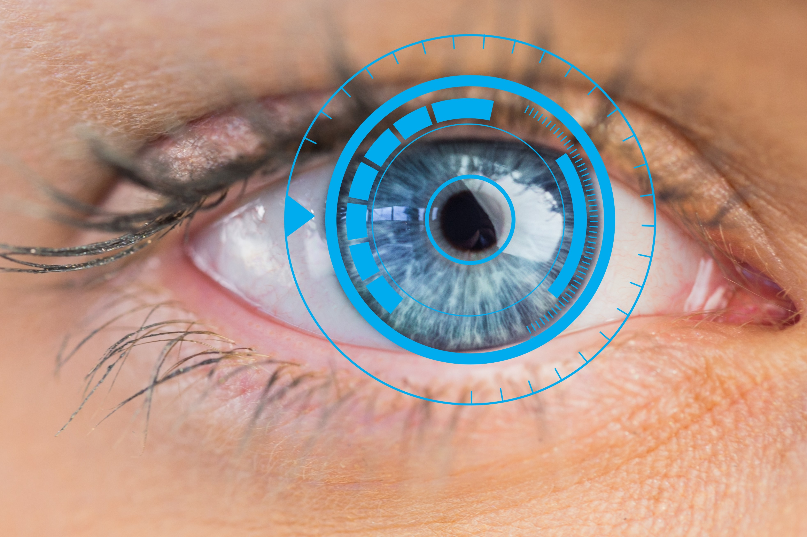
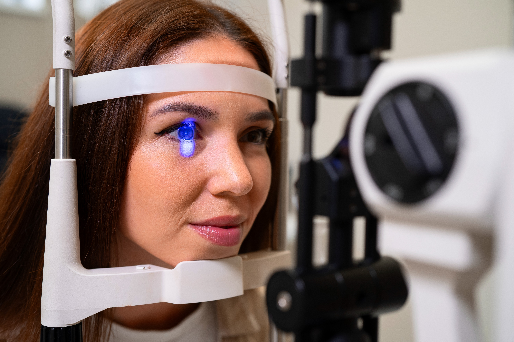
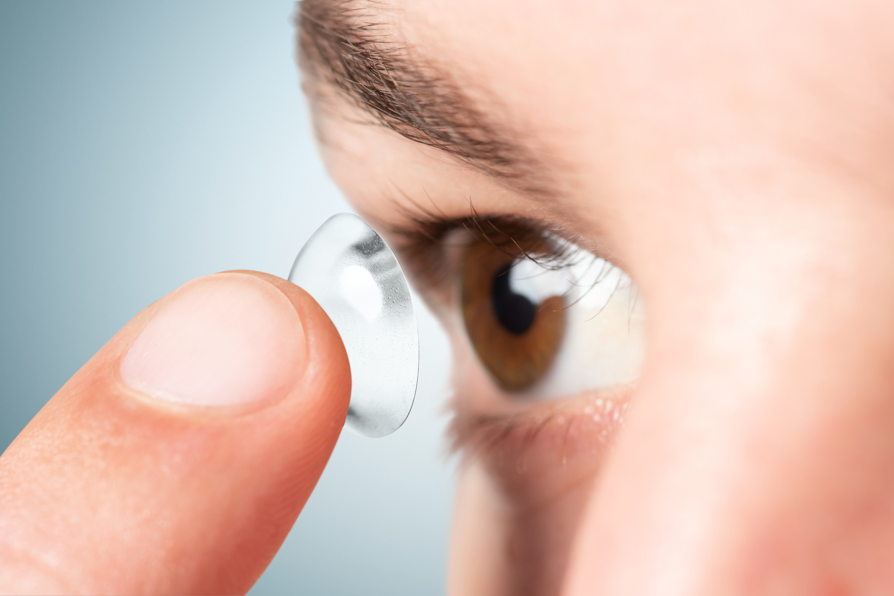
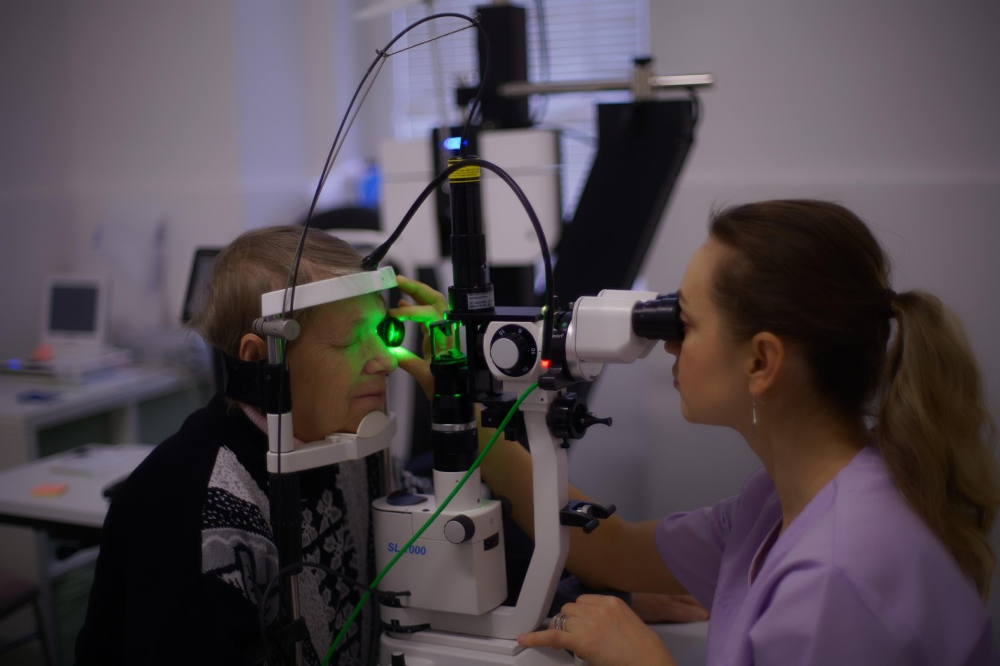
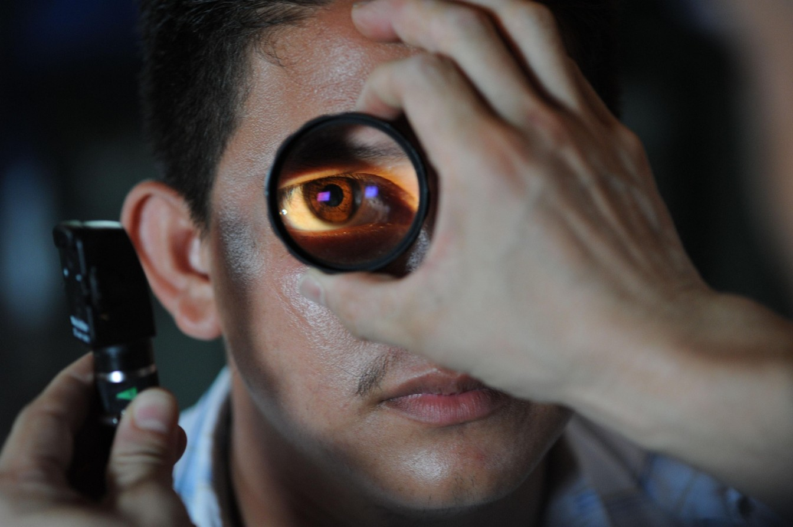

Glasses and contact lenses are not the only options for vision correction. ICL surgery in Delhi NCR uses a thin lens placed inside the eye to correct vision — without removing or reshaping corneal tissue.

ICL stands for Implantable Collamer Lens. It is a type of phakic intraocular lens (IOL) that is implanted inside the eye, in front of the natural eye lens. Unlike LASIK, ICL surgery does not involve reshaping or removing tissue from the cornea.
The lens is made according to the measurements of your eye and implanted to help reduce your dependence on glasses. ICL can be an option for people who are not suitable candidates for LASIK and are looking for an alternative for vision correction.

ICL surgery offers several features that can make it an option for people looking for an alternative to LASIK or contact lenses.
ICL is designed to provide clear and sharp vision, including in cases involving cylinder power.
An important consideration for people who frequently drive or spend time outdoors after dark.
Implanted inside the eye rather than sitting on the surface, helping avoid contact-lens-related dryness.
The ICL lens comes with built-in UV protection as an additional feature.
Takes approximately 15–20 minutes, with an early return to daily activities within a few days.
Unlike LASIK, ICL surgery corrects vision without reshaping or removing corneal tissue.
ICL may be a suitable option for people who fall into any of the following categories. A detailed eye evaluation will confirm your candidacy.



From eye assessment to clearer vision, guided by our team at every stage.
Your eyes are evaluated, and the necessary measurements are taken to determine whether ICL is suitable for you.
The ICL is made to order based on the measurements of your eye.
The thin ICL lens is implanted inside the eye, in front of the natural eye lens.
Patients can expect an early return to their daily activities within a few days, as advised by their eye specialist.
Contact lenses are a temporary form of vision correction and need to be applied and removed regularly. ICL, on the other hand, is an implanted lens that remains inside the eye and can offer high-definition vision, particularly in cases involving cylinder power.
| Feature | ICL | Contact Lenses |
|---|---|---|
| Placement | Implanted inside the eye | Worn on the surface of the eye |
| Duration | Long-term vision correction | Temporary vision correction |
| Stability | Does not move with blinking | Can move during wear |
| Dryness | Does not cause contact-lens-related dryness | May cause dryness |
| Vision Quality | High-definition vision | Provides vision correction while worn |
*Information based on details provided by Khanna Eye Centre. Suitability for ICL is confirmed after a detailed clinical evaluation.
A family legacy of ophthalmology, offering ICL vision correction with personalised, patient-first care.
We have offered ICL treatment since the procedure was introduced in India.
Our centre has helped thousands of patients with ICL vision correction.
Our surgeons have extensive experience in evaluating and performing ICL procedures.
Each ICL lens is made to order based on your individual eye measurements.
We assess your eye measurements and requirements to plan a suitable ICL treatment.
Our aim is to help patients achieve better vision and reduce their dependence on glasses.
Returning to your daily routine after ICL implantation.
ICL surgery is a relatively short procedure that typically takes around 15–20 minutes.
Most patients can gradually return to their daily activities within a few days.
Your eye specialist will provide specific instructions tailored to your recovery.
Your surgeon will guide you on when it is appropriate to resume your normal routine.
A family legacy of ophthalmology, treating Delhi since 1951.

35+ years' expertise; trains ophthalmologists across India.

15+ years in advanced phaco & retinal care.

15+ years in cornea & specs-removal surgery.

15+ years in advanced retina & micro-incision surgery.
"Professional and reassuring experience. The entire ICL surgery process was explained clearly, and the team answered all my questions. The procedure was quick, and I was given clear recovery instructions."
"Very smooth experience. I was considering ICL after being advised that LASIK was not suitable for me. The doctors explained my options and guided me through the procedure."
"Clear guidance throughout. From the initial consultation to the follow-up, the team was helpful and professional. I appreciated the detailed explanation of the procedure and what to expect during recovery."
Schedule your ICL consultation with our specialists at Khanna Eye Centre. We'll examine your eyes, explain your options honestly, and provide a clear treatment plan.